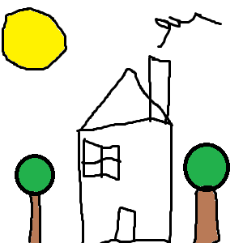

Pildikaart iseseisev töö

Uks on tarind, mille abil saab hoonesse või ruumi sissepääsu ja sellest väljapääsu võimaldamiseks mõeldud ava sulgeda. Selleks asetatakse uks nii, et ta sisse- ja väljapääsuava tihedalt kataks.